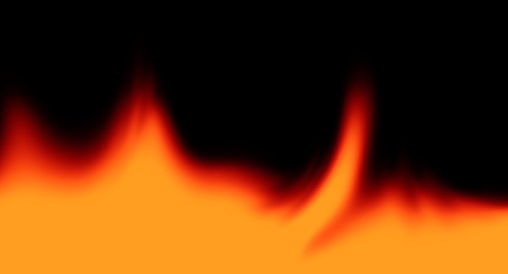

Эффекты Framer
Демо эффектов
Живой огонь из Framer, сияющая кнопка и её версия с огнём, который тянется к курсору.
WebGL
Живой огонь

3,4 МБ
весит фоновое видео огня для десктопа
≈ 5 КБ
весит этот шейдер в сжатом виде
Любой размер
композиция не плывёт при изменении окна
CSS
Сияющая кнопка
Вращающаяся градиентная рамка, зерно и мягкое свечение снизу. Без картинок, canvas и видео.
Наведите курсор или нажмите Tab — рамка станет шире, ярче и ускорится.
CSS + Canvas
Кнопка с огнём
Подведите курсор ближе 500 px — у ближайшего края появляется пламя и тянется к курсору. На самой кнопке огонь охватывает весь периметр.
На телефоне и планшете: касание рядом — пламя у края, нажатие на кнопку — огонь по периметру. Держится 8 секунд.
Настройка огня Меняйте ползунки — огонь меняется сразу
Локальный огонь у ближайшего края: появляется в радиусе, заданном ползунком «Порог», и тянется к курсору.
Мягкий огонь по всему периметру, когда курсор на кнопке.
Параметры текстом — скопируйте и пришлите мне
Оригиналы — theme-variant.framer.ai и hyperiux-vault.framer.website